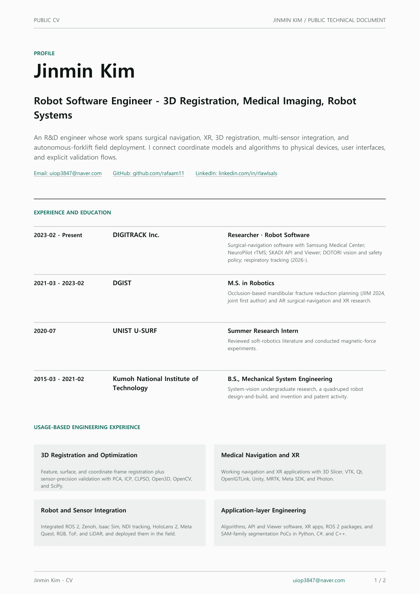
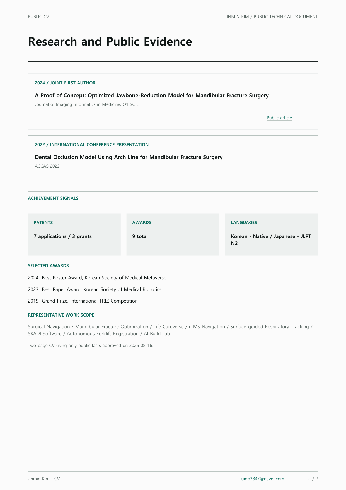

I connect 3D registration and robot software to working systems.
My work has expanded from medical navigation into XR, 3D registration, and multi-sensor integration. This two-page document contains only approved public facts and usage-based engineering experience.
HTML SUMMARY
Jinmin Kim · Public career summary
3D Registration and Robot Software Engineer · An R&D engineer whose work spans medical navigation, XR, 3D registration, and multi-sensor integration. I connect coordinate models and algorithms to physical devices, user interfaces, and explicit validation flows.
Experience and education
- DIGITRACK Inc.Robot Software Engineer · Implement medical navigation, XR, 3D registration, multi-sensor perception, industrial system integration, and field validation.
- DGISTM.S., Robotics and Mechatronics Engineering · Researched mandibular fracture reduction optimization, surgical navigation, and XR.
- UNIST U-SURFSummer Research Intern · Reviewed soft-robotics literature and conducted magnetic-force experiments.
- Kumoh National Institute of TechnologyB.S., Mechanical System Engineering · Completed undergraduate system-vision research and invention activities.
Implementation-based capabilities
- 3D Registration and OptimizationUsed PCA, ICP, CLPSO, Open3D, OpenCV, and SciPy for feature, surface, and coordinate-system problems.
- Medical Navigation and XRBuilt working applications with 3D Slicer, VTK, Qt, OpenIGTLink, Unity, MRTK, Meta SDK, PUN2, and Photon Voice.
- Robot and Sensor IntegrationIntegrated ROS 2, Unity, Isaac Sim, NDI tracking, HoloLens 2, Meta Quest, RGB, ToF, and LiDAR.
- Application-layer EngineeringUsed Python, C#, and C++ for algorithms, XR applications, APIs, ROS 2 packages, and device interfaces.
Research and public evidence
- A Proof of Concept: Optimized Jawbone-Reduction Model for Mandibular Fracture SurgeryJournal of Imaging Informatics in Medicine, Q1 SCIE · Joint first author
- Dental Occlusion Model Using Arch Line for Mandibular Fracture SurgeryACCAS 2022 · International conference presentation
Achievement signals and boundary
Public cumulative signals: 7 applications · 3 grants · 9 awards
- Patents
- 7 applications · 3 grants
- Awards
- 9 awards
- Languages
- Korean - Native · Japanese - JLPT N2
Selected awards
- Best Poster Award, Korean Society of Medical Metaverse
- Best Paper Award, Korean Society of Medical Robotics
- Grand Prize, International TRIZ Competition
These are approved public cumulative signals, not claims of sole ownership or project-level effect.
Public CV

